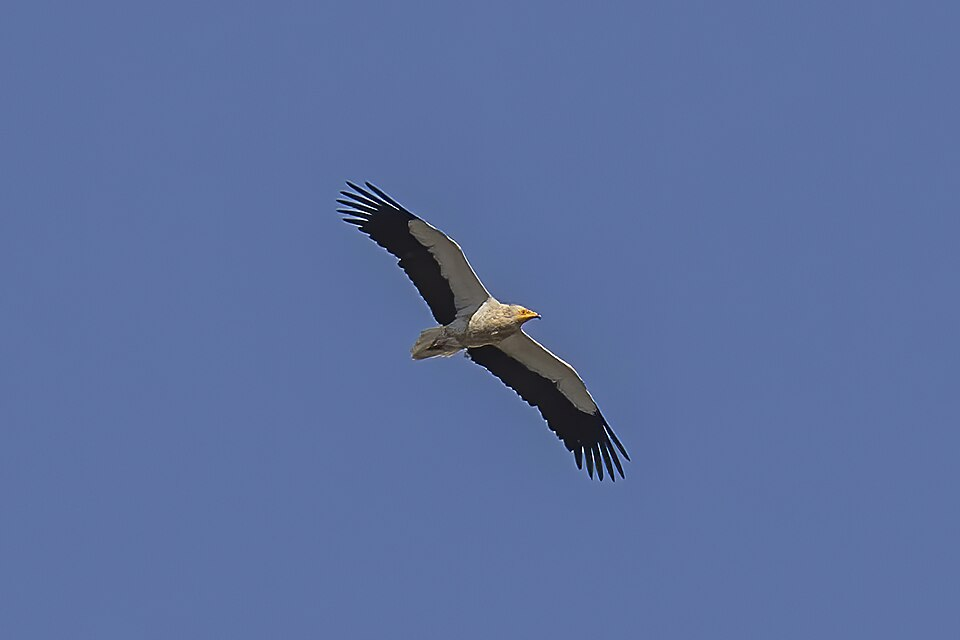

An estimated 11 to 36 million birds are illegally killed or captured annually across the Mediterranean, according to a 2016 scientific study whose findings were highlighted again by conservation organisations on 10 October 2026. This figure featured in a warning issued by Tour du Valat, EuroNatur and BirdLife International on 10 October 2026, World Migratory Bird Day, calling for more effective protection along migration routes.
According to the warning, 83% of the 46 assessed countries have yet to take sufficient measures to meet the commitment to halve illegal killing and capture by 2030. The organisations called for closing legal gaps, strengthening field monitoring and awareness, and wider cooperation between public authorities, hunters and conservation groups.
Lebanon on the migration route
In Lebanon's Bekaa Valley, Sayd Magazine's archive documents the removal of nets used for trapping birds, an example of the risks migratory species face along the route. Countering indiscriminate trapping is compatible with safeguarding responsible and lawful hunting within applicable seasons and regulations.
An international project for the Egyptian vulture

Also on 10 October, the Bulgarian Society for the Protection of Birds announced the LIFE EV Safe Return project, bringing together 15 organisations and institutions from Europe, the Middle East and Africa. Running until 2031, it aims to improve the prospects of the Egyptian vulture, a migratory raptor travelling over 5,000 kilometres between the Balkans and its wintering areas in Africa.
The project addresses poison baits, illegal hunting and electrocution on unsafe power infrastructure. Both initiatives highlight the need for coordinated cross-border protection, from nesting areas to stopover sites and wintering grounds.